Devoluções de venda
No ERP da Olist, esta tela registra a devolução de uma venda já existente, acompanha as devoluções e emite vale-troca. Você escolhe a venda, informa quantidades, depósito, logística reversa e a forma de devolver o valor, e consulta ou age sobre devoluções já lançadas.
Em Configurações > Configurações ERP > Vendas > Configurações das devoluções de vendas, você define se o estoque entra automaticamente ao finalizar a devolução.
Pré-requisitos
- Para incluir uma devolução, selecione uma venda já existente. A busca usa cliente, número do pedido ou chave de acesso, com filtro Pedido de venda, Nota fiscal ou Produto.
- Depósito, Forma de envio (reversa) e Forma de frete (reversa) listam opções já cadastradas na conta.
Importante
- Não há formulário de devolução em branco. A inclusão começa pela seleção da venda.
- Emitida por, Identificador no e-commerce e Nº no canal de venda não aceitam digitação.
- Se Gerenciar vales-troca não aparecer, peça acesso ao administrador da conta.
Instruções
Incluir uma devolução
-
Acesse Vendas > Devoluções de venda.
-
Clique em Incluir devolução.
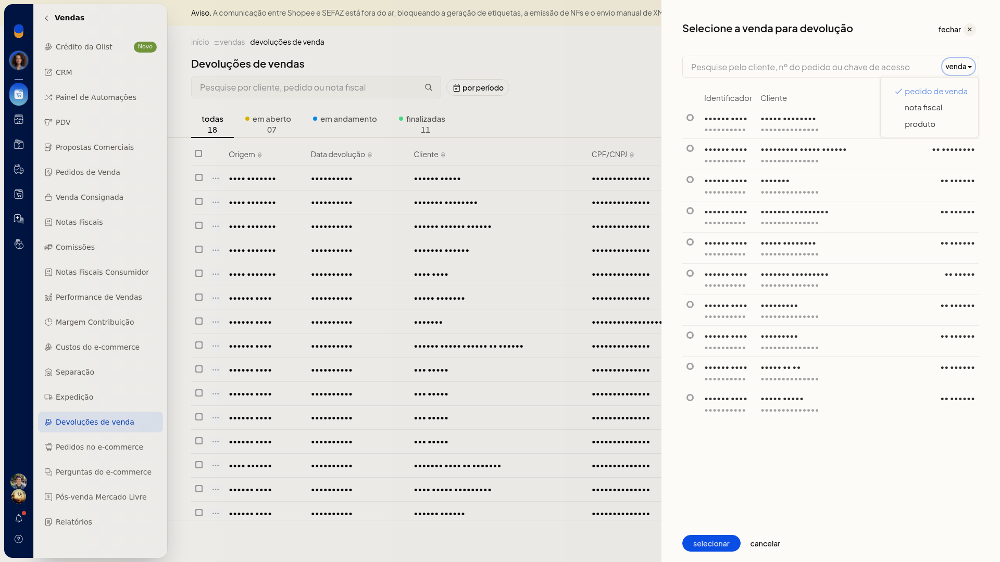
-
Busque por cliente, número do pedido ou chave de acesso.
-
Filtre por Pedido de venda, Nota fiscal ou Produto.
-
Clique na linha da venda.
Dados da devolução
- Preencha os campos. Nenhum deles é obrigatório.
-
Data da devolução
-
Observações Internas
-
Marcadores: informe uma tag
-
Devolução parcial: ligue quando a devolução não for total e informe Qtde devolução com duas casas decimais
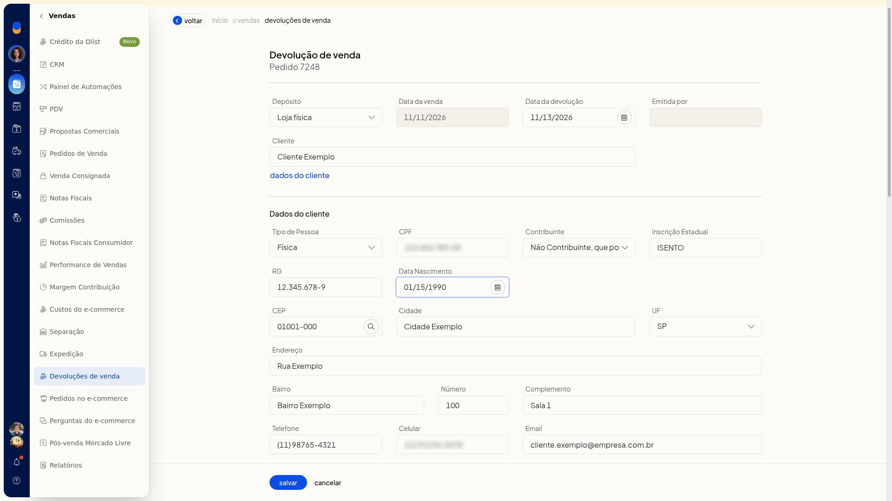
Logística reversa
- Escolha Depósito, Forma de envio (reversa) e Forma de frete (reversa).
- No depósito, as opções cadastradas podem incluir Padrão, E-commerce, Fulfillment e Loja física.
- Na forma de envio, a lista inclui Não definida e opções de Correios.
- Na forma de frete, a lista inclui Não definida.
Dados do cliente
- Abra Dados do cliente se precisar completar nome, CPF, inscrição estadual, RG, data de nascimento, CEP, cidade, UF, endereço e contatos.
Devolução do valor
- Escolha como devolver o valor.
-
Sem pagamento, Vale-troca e Estornar da venda / nota não pedem campos extras.
-
Contas a pagar pede Categoria.
-
Dinheiro pede Conta financeira e Categoria.
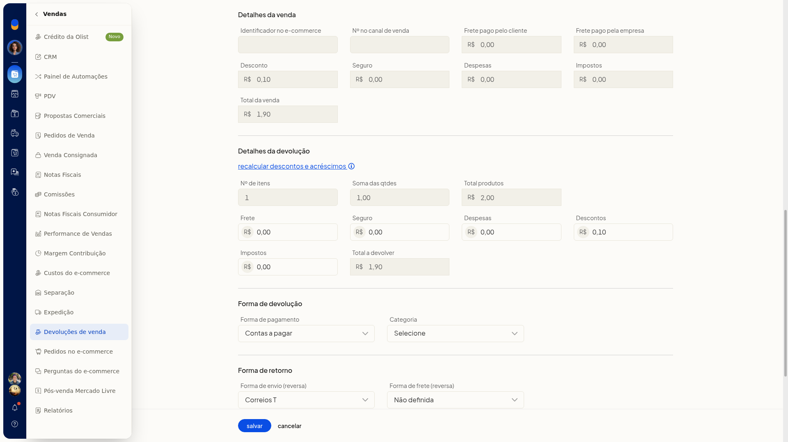
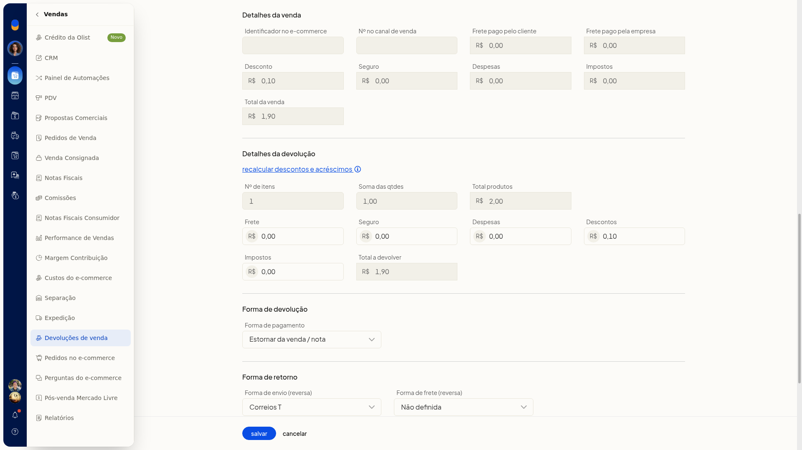
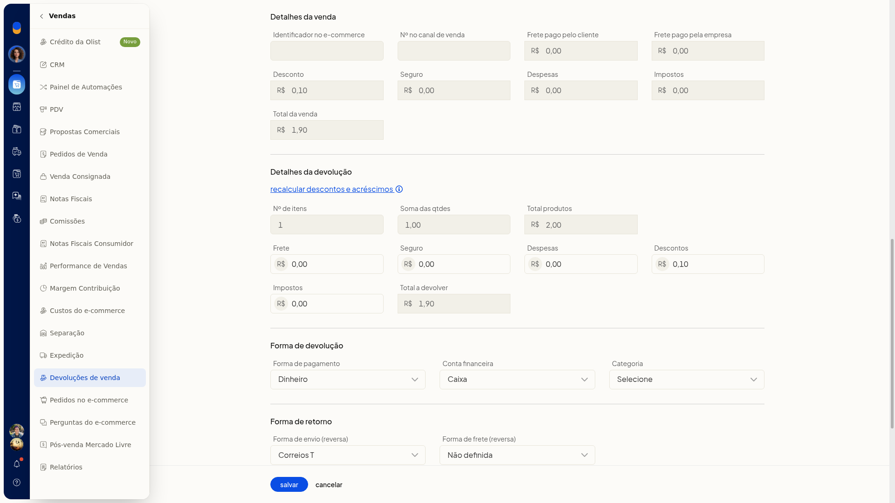
- Clique em Salvar para gravar a devolução, com a venda de origem já vinculada.
Incluir um vale-troca
-
Na lista Devoluções de venda, clique em Gerenciar vales-troca.
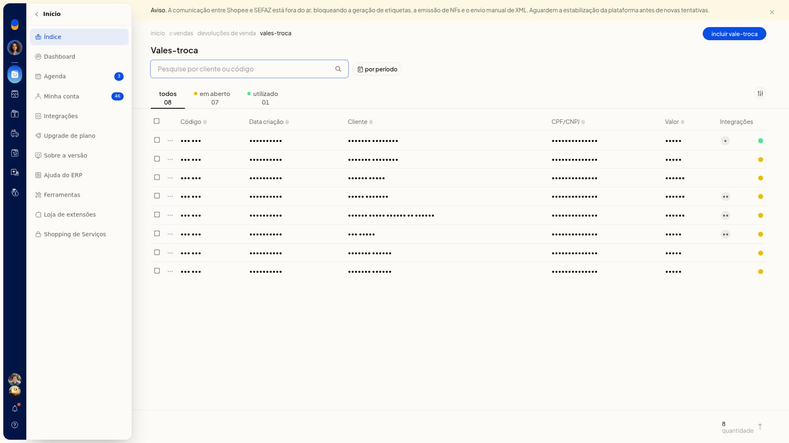
-
Use a busca por cliente ou código, o filtro por período e as abas Todos, Em aberto e Utilizado.
-
Clique em Incluir vale-troca.

-
Confira Data do vale, já preenchida no formato DD/MM/AAAA, e Código, já exibido.
-
Informe o Valor com vírgula decimal.
-
Em Cliente, pesquise pelas iniciais do nome, pelo CPF/CNPJ ou pelo email.
-
Clique em Dados do cliente.
-
Escolha Tipo de Pessoa: Jurídica, Física, Estrangeiro ou Estrangeiro no Brasil.
-
Para pessoa jurídica, preencha CNPJ, Contribuinte, Inscrição Estadual, CEP, Cidade, UF, Endereço, Bairro, Número, Complemento, Telefone, Celular e Email. Nenhum desses campos é obrigatório.
-
Em Contribuinte, as opções confirmadas são Não informado e Contribuinte ICMS.
-
Informe o CEP com hífen. Use Buscar dados do CEP se quiser localizar o endereço.
-
Em UF, escolha a sigla na lista.
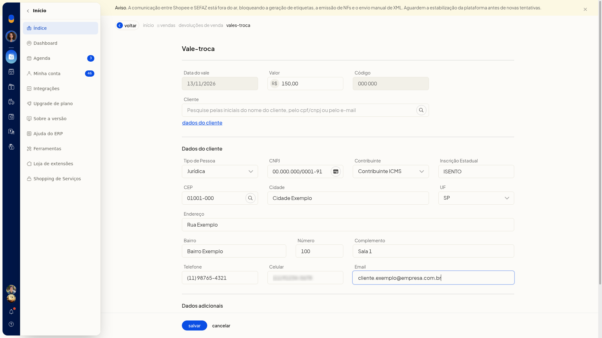
- Em Dados adicionais, preencha Observação.

- Clique em Salvar para gravar o vale-troca.
Consultar e agir sobre uma devolução
-
Acesse Vendas > Devoluções de venda.
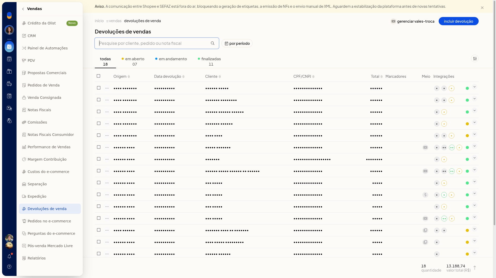
-
Busque por cliente, pedido ou nota.
-
Filtre o período por Sem filtro, Do dia, Do mês ou Do intervalo.
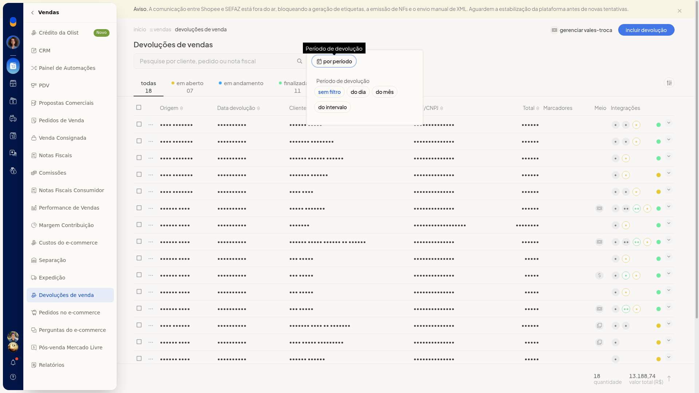
-
Use as abas Todas, Em aberto, Em andamento e Finalizadas. O rodapé mostra a quantidade e o total das devoluções exibidas.
-
Abra Informações visíveis e marque as colunas: Origem, Data criação, Data devolução, Cliente, CPF/CNPJ, Total, Marcadores, Meio de pagamento, Integrações e Situação.
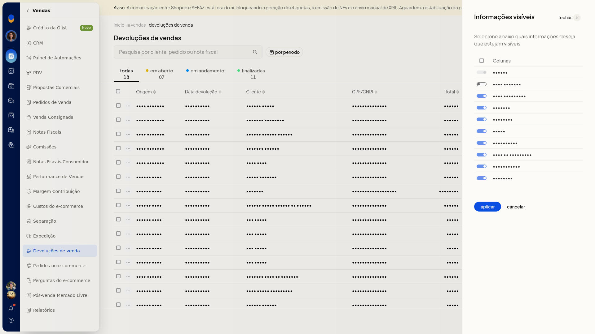
-
No menu da linha, escolha a ação: Gerar nota de devolução, Editar observações internas, Estornar estoque, Gerenciar lotes de produtos, Compartilhar, Imprimir, Salvar em PDF, Alterar situação, Editar marcadores ou Excluir devolução.
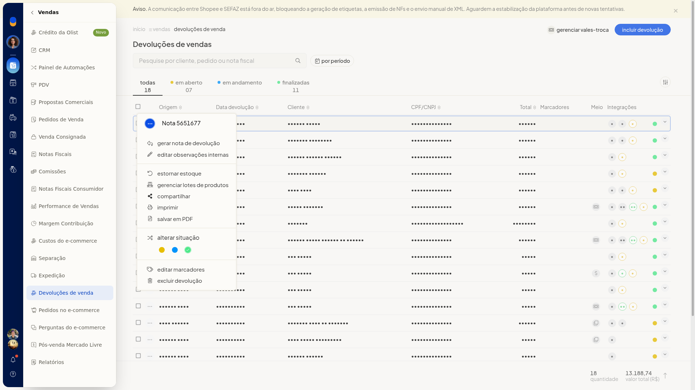
-
Para várias linhas, use Alterar marcadores ou Excluir devoluções. Em Mais ações, a lista oferece Gerenciar vales-troca. Assim você localiza a devolução e acessa nota, estoque, impressão, situação, marcadores e exclusão.
Configurar o lançamento automático de estoque
-
Acesse Configurações > Configurações ERP > Vendas > Configurações das devoluções de vendas.
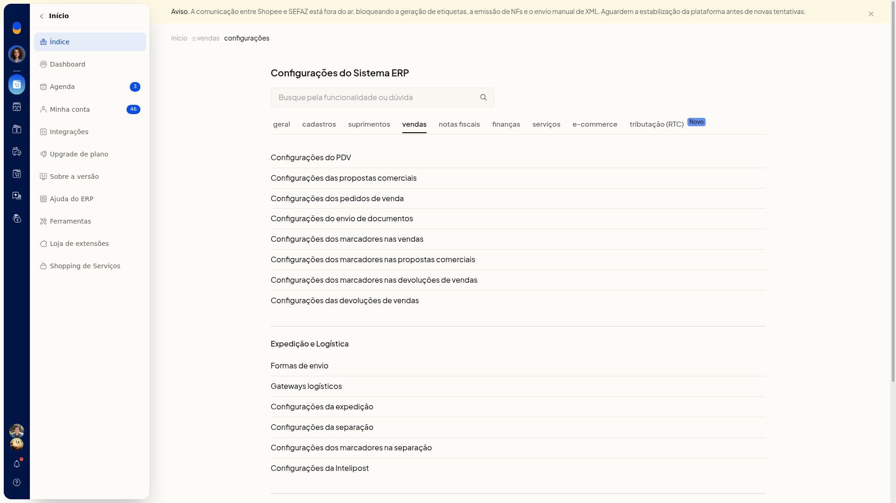
-
Marque ou desmarque Lançar estoque automático ao finalizar devolução. Ao finalizar uma devolução manualmente ou ao autorizar a nota de devolução no Sefaz, o estoque é lançado automaticamente.
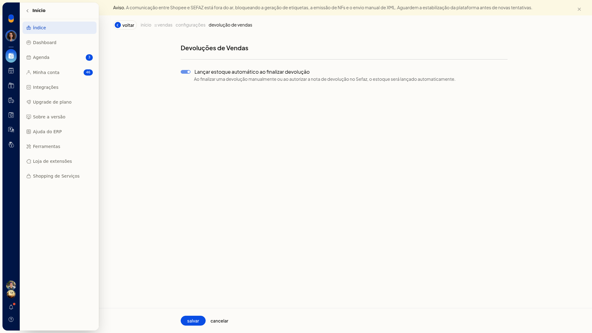
-
Clique em Salvar para gravar a configuração.
Informações adicionais
Vale-troca em aberto
Marcar como utilizado e excluir o vale-troca só aparecem quando ele ainda está em aberto.